Phoenix-Center Harburg
Mo–Sa 10:00 – 20:00 Uhr
21079 Hamburg
Mo – Sa10:00 – 20:00 Uhr
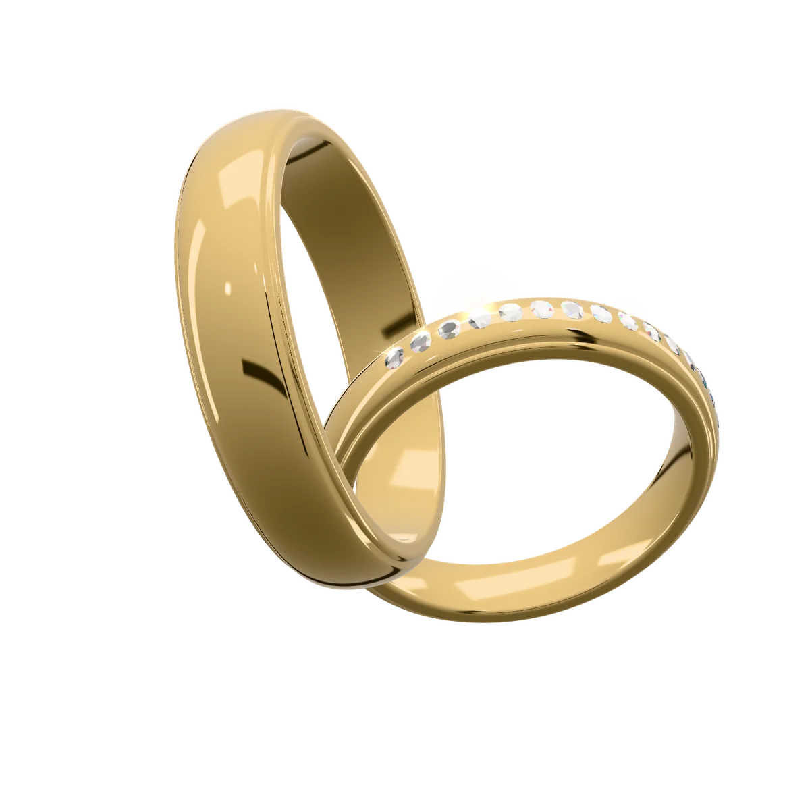
Juwelier in Hamburg, Norderstedt und Lüneburg
Persönliche Beratung ohne Zeitdruck – in vier Filialen. Dazu Werkstatt-Service, Gravuren und fairer Goldankauf.
4,7 von 5 Sternen bei GoogleGelbgold 585
Trauringe, Verlobungsringe, Memoireringe, Brillantschmuck, Labordiamanten, Uhren, Gravuren, Goldankauf, Reparaturen

Ihr Ring entsteht
01 / 05
Platin, Weißgold, Roségold oder Gelbgold: Die Legierung bestimmt Farbe, Gewicht und Härte Ihres Rings.
02 / 05
Flach, mit Kante oder sanft gewölbt. Das Profil entscheidet, wie sich ein Ring am Finger anfühlt und wie er das Licht fängt.
03 / 05
Eismatt, längsmatt, mit polierter Mitte oder hochglänzend – die Oberfläche gibt dem Ring seinen Charakter.
04 / 05
Drei Brillanten, eine Reihe als Halbmemoire oder ein einzelner Stein: Brillanten setzen das Licht in Szene.
05 / 05
Zum Schluss das Persönlichste: Namen und Datum auf der Innenseite – nur für Sie beide sichtbar.
Gefällt Ihnen, was Sie sehen?
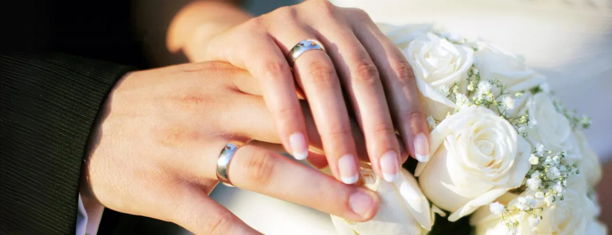
Trauringe und Verlobungsringe
Ihr Trauring ist mehr als ein Schmuckstück – er erinnert Sie jeden Tag an Ihr schönstes Versprechen. Deshalb nehmen wir uns Zeit, bis Sie den Ring gefunden haben, der zu Ihnen beiden passt.
Kollektionen
Über 1.250 Ringmodelle im Katalog, dazu Brillantschmuck und Uhren bekannter Marken – zum Anprobieren in allen vier Filialen.
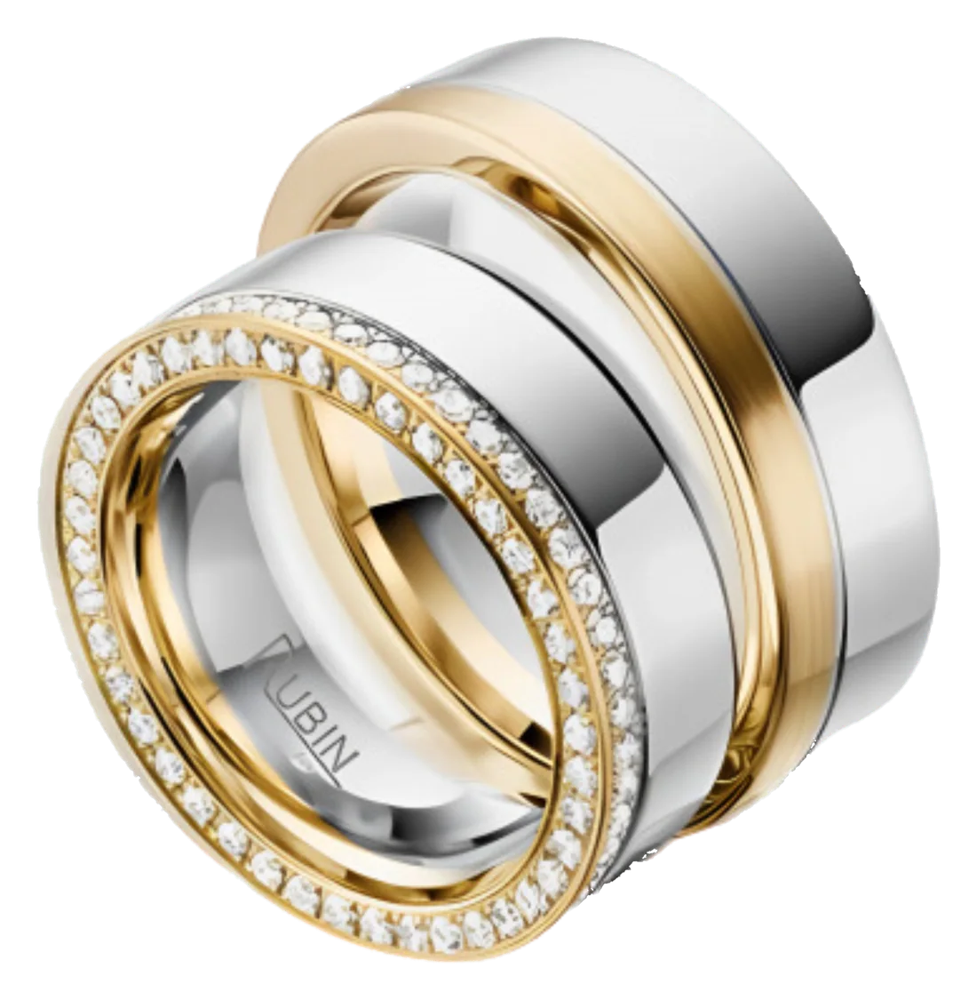
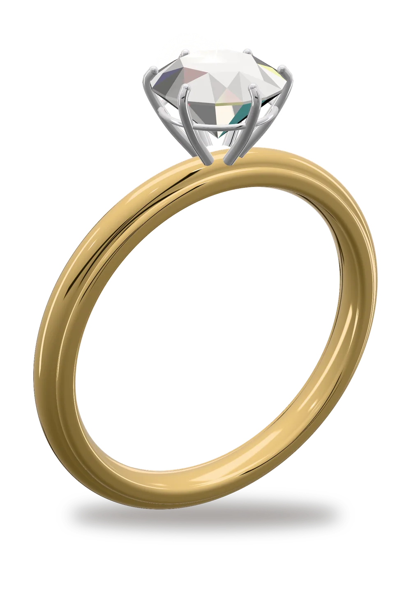
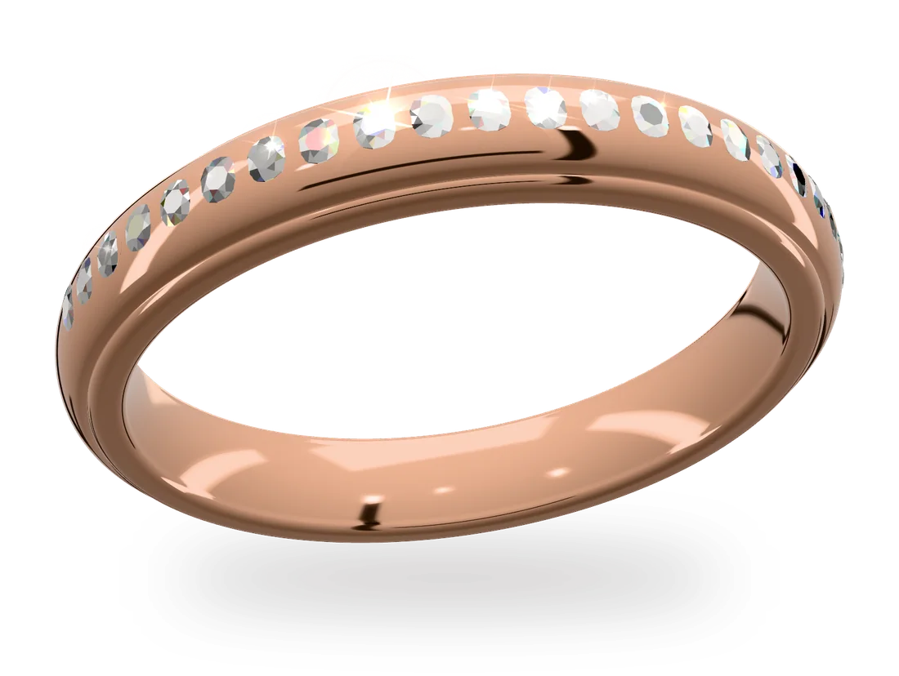
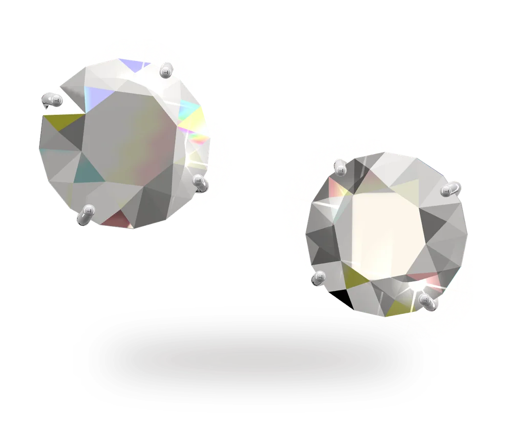
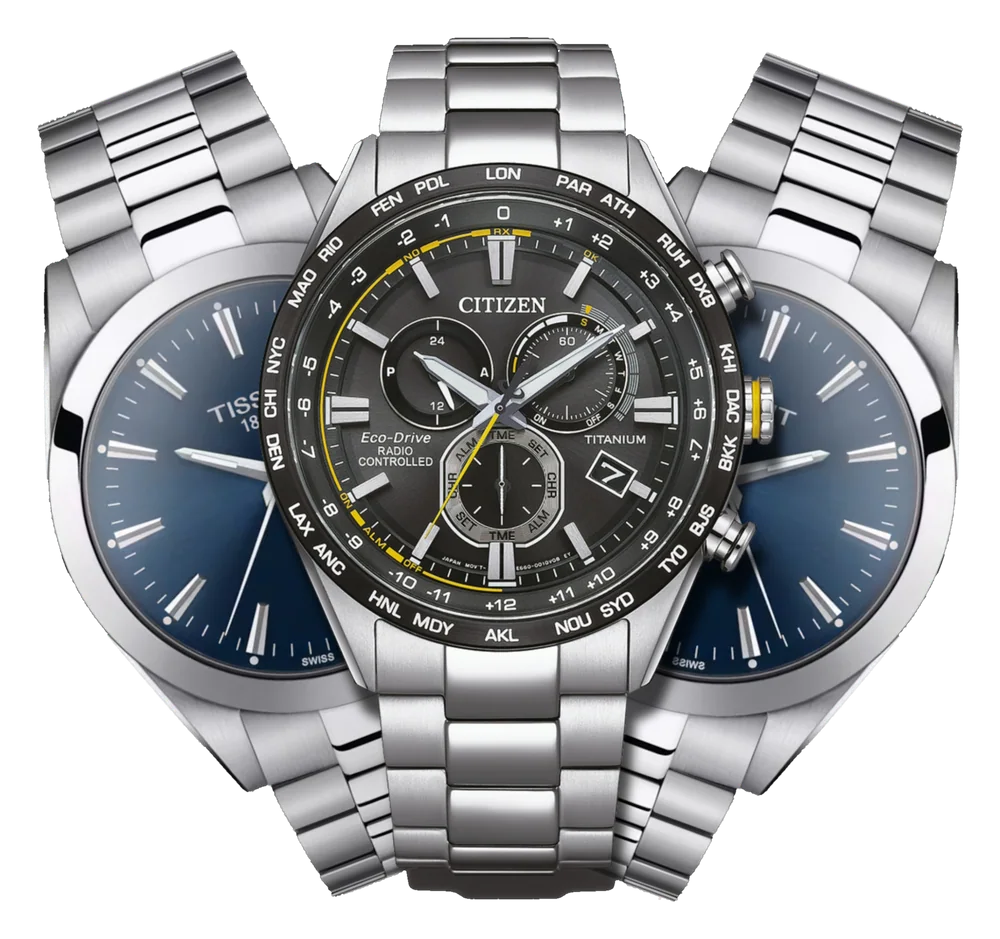
Aus dem Katalog

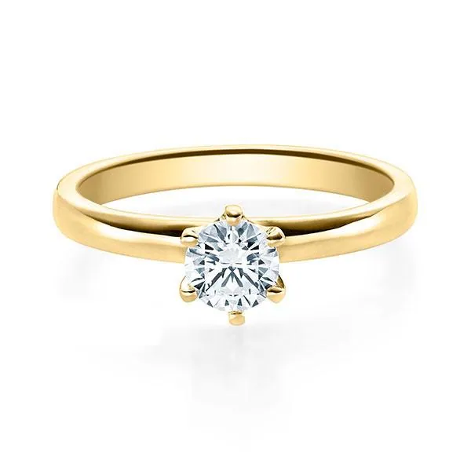
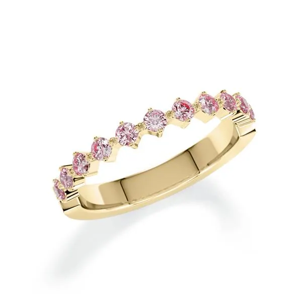
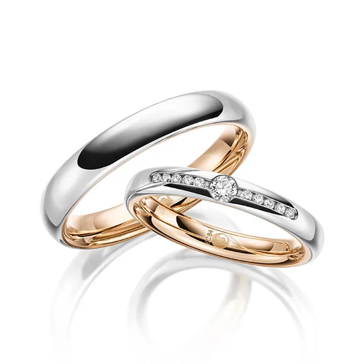
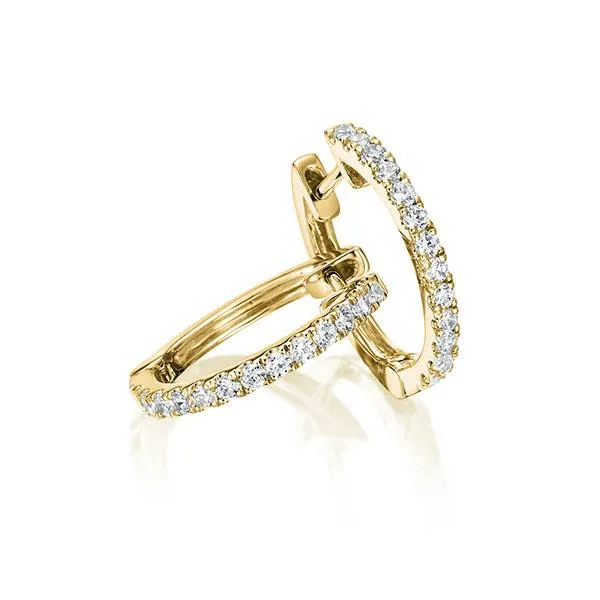
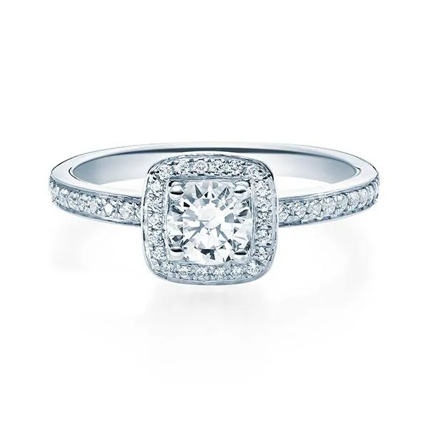
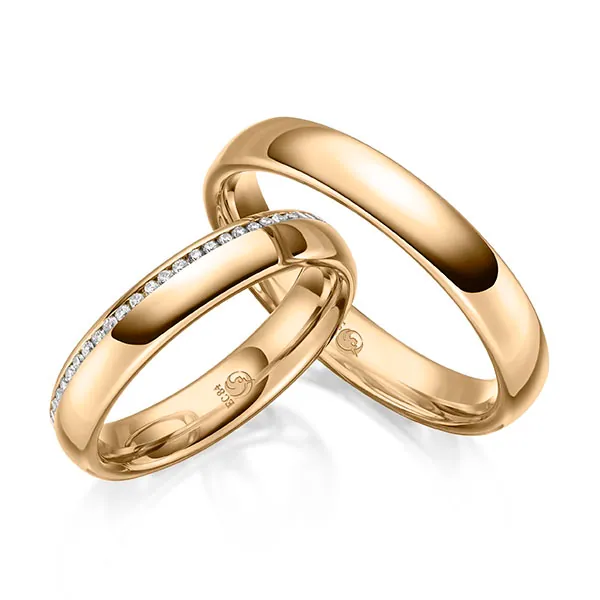
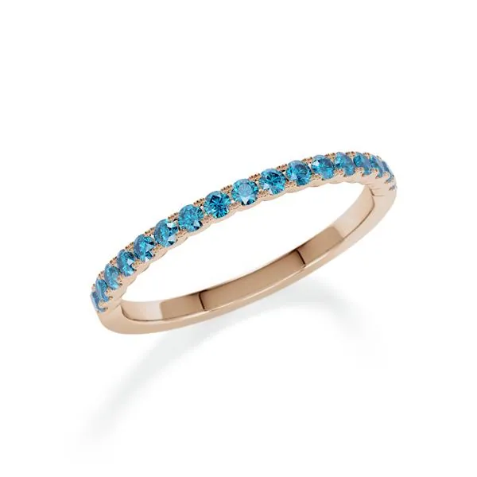
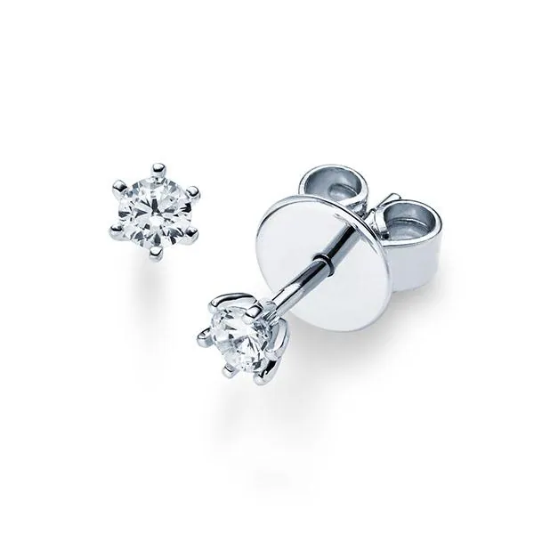
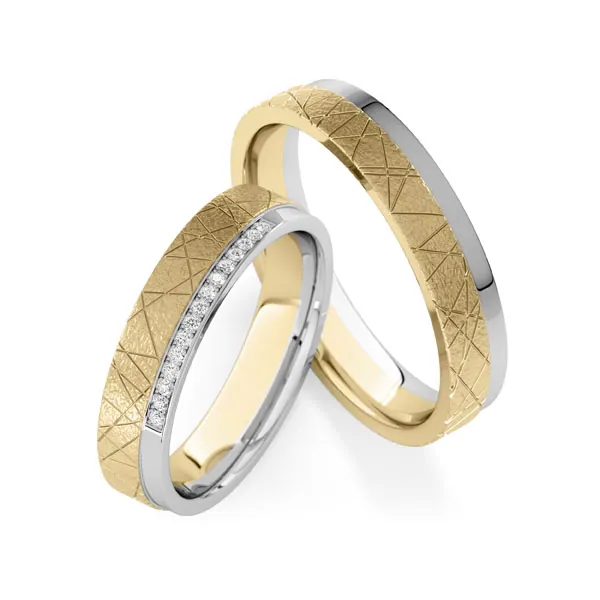
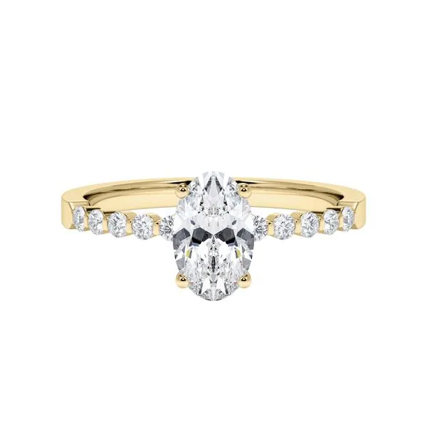
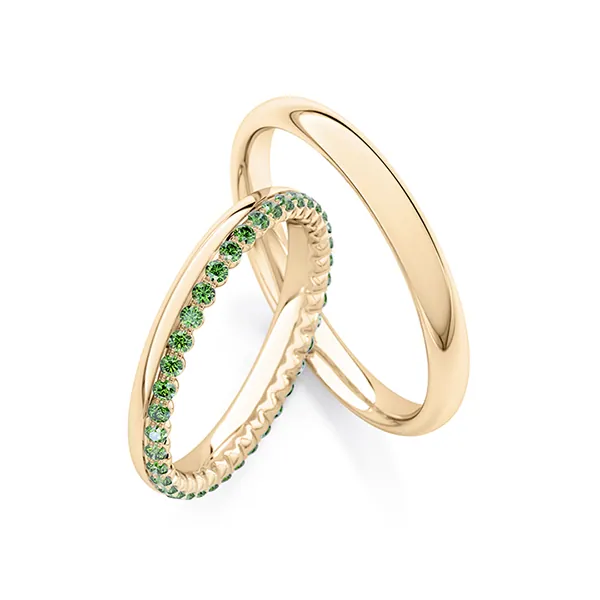
Jedes Bild zeigt ein Modell aus unserem Sortiment, mit Artikelnummer.
Alle Kategorien ansehenBeratung
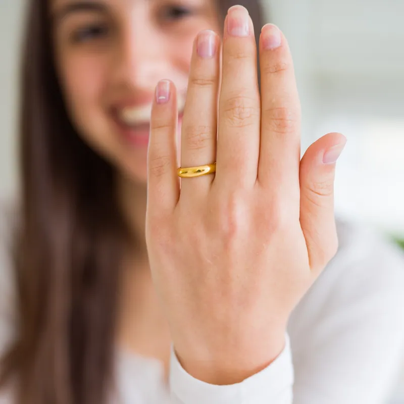
Unverbindlich und ohne Zeitdruck. Mit Termin nehmen wir uns besonders viel Zeit für Sie.
Legierungen, Profile, Breiten und Oberflächen – wir zeigen Ihnen die Unterschiede direkt am Finger.
Wir messen Ihre Ringgröße mit dem Ringmaß und legen mit Ihnen die Gravur fest.
Werkstatt und Service
Vom Batteriewechsel bis zur Umarbeitung von Erbstücken: Bringen Sie Ihren Schmuck und Ihre Uhr einfach mit.
Sie wünschen, wir realisieren.
Gestalten Sie einen individuellen Ring, einzigartig wie Ihre Liebe – oder lassen Sie aus Erbstücken und Altgold ein neues Schmuckstück entstehen.

Goldankauf
In allen vier Filialen kaufen wir Goldschmuck, Bruch- und Zahngold, Münzen und Barren an, außerdem Silber, Platin und Palladium.
Bringen Sie Ihre Stücke in eine unserer Filialen.
Wir bestimmen den Feingehalt und wiegen auf einer geeichten Waage vor Ihren Augen.
Sie erhalten den tagesaktuellen Ankaufspreis und entscheiden in Ruhe.
Unsere Versprechen
Was Juwelier Rubin ausmacht – in allen vier Filialen.
Unsere Ringe werden in Deutschland gefertigt.
Wir nehmen uns Zeit für Ihre Fragen und zeigen Ihnen die Unterschiede direkt am Finger.
Über 1.250 Ringmodelle im Katalog, dazu Brillantschmuck und zwölf Uhrenmarken.
In unserem Brillantschmuck verarbeiten wir Labordiamanten – gewachsen ohne Bergbau.
Harburg, Alstertal, Norderstedt und Lüneburg – jeweils mit Service und Goldankauf.
Zufriedene Kunden
von 5 Sternen bei Google
4
Filialen in Hamburg, Norderstedt und Lüneburg
1.250+
Ringmodelle im Katalog
12
Uhrenmarken
4,7
Sterne bei Google
Juwelier Rubin hat einen tollen Kundenservice und die Beratung war sehr nett und freundlich. Ich hatte einen bestimmten Wunsch und es war gar kein Problem mir diesen zu bestellen. Ich kann diesen Juwelier nur empfehlen! Vielen Dank
Super freundliche Beratung Mega schöner Schmuck Wir kommen aufjedenfall wieder 10 Sterne
Extrem fachkompetente Beratung und zuvorkommende Kundenbetreuung. 5 ⭐️
Tolle Beratung, sehr freundlicher und kompetenter Service, gutes Preis/Leistungsverhältnis. Wir kommen sehr gerne wieder
Super Beratung , einzigartiges Sortiment! Für jeden Anlass das passende Schmuckstück ! Beratung sehr kompetent und freundlich ! Besuch lohnt sich in jedem Fall ! 10/10
Sehr gute Beratung! Die Mitarbeiter sowie der Chef waren super hilfsbereit, sympathisch und nett.
Perfekte Beratung, top Preise ich bin begeistert und kaufe bestimmt wieder! Auch empfehle ich diesen Shop weiter an meine Freunde und Bekannte! Sehr empfehlenswert.
1A Abwicklung - freundlich - kompetent - gute Angebote.
Super nett, tollen Schmuck, tolle Preise, immer wieder gerne.
Sehr gute Beratung und freundliches Personal Immer weiter empfehlenswert wert
Super Service, kann ich zum Einkauf nur Empfehlen.
Tolle Auswahl und super Service
Wenn man in Sachen Kompetenz gute Beratung und sich wohlfühlen nach etwas sucht, ist man hier genau richtig. Keine Frage kein Anliegen bleibt unbeantwortet. Auch wenn man nur nach Informationen sucht. Ich würde nein ich werde wiederkommen.
Ein sympathischer Inhaber, tolle Uhren, toller Schmuck, eine faire Beratung und Preisgestaltung. Hier kauft man gerne und dann auch immer wieder! Herr Aktan und Team...machen Sie weiter so! Spitze und absolute Empfehlung !
Ganz tolle Menschen in diesem Geschäft. Wurde super aufmerksam und lieb beraten. Wenn ich ein neues Schmuckstück brauche, gehe ich nur noch zum Rubin im AEZ. Vielen Dank nochmal für meine neue Kette an den lieben Kollegen und seine schöne Kollegin. Klare Empfehlung !!
Ich bin seid vielen Jahren Kunde und sehr zufrieden. Ich werde jedes Mal sehr freundlich und sehr zuvorkommend bedient. Besonders der Chef gibt sich besonders viel Mühe um mich zu einem glücklichen Kunden zu machen. Ich komme gerne wieder!
Sehr freundlicher und zugewandter Service, ausführliche Beratung.
Total tolle Menschen, höflich zuvorkommend und kompetent. Ich gehe ab jetzt nur noch da hin für Schmuck
Vielen Dank für die kompetente Beratung und den zuvorkommenden Service! Es ist immer wieder schön in das Geschäft zu kommen. Liebe Grüße!
Ich geh immer wieder gerne hin,man wird freundlich und herzlich bedient und man nimmt immer ein Schmuckstück mehr mit 🙂
Ein sehr nettes Team,auch für kurz entschlossene. Immer wieder gerne👍
Sehr Emphelenwert. Wird weiter empfohlen. Sehr nette, freundliche, kompetente, fachliche Beratung. Fühlte Mich sehr familiär Aufgenommen. Sehr Viel Auswahl... EINFACH TIP TOP, Vielen Dank...
Sehr gut, freundlich und zuvorkommend.
Sehr freundlich. Super service. Schnell. Werde hier nochmal kommen fur meine nachste jewelier sachen.
Stimmen aus Google-Bewertungen, wie sie bisher auf rubin-gold.de standen.
Filialen
Drei Filialen in Einkaufszentren rund um Hamburg, eine in der Lüneburger Altstadt. Goldankauf und Service bieten wir an allen Standorten an.
Mo–Sa 10:00 – 20:00 Uhr
Mo–Sa 09:30 – 19:00 Uhr
Mo–Sa 09:30 – 19:00 Uhr
Mo–Fr 09:00 – 18:00 Uhr, Sa 09:00 – 17:00 Uhr
Entwurf der neuen Website von Juwelier Rubin. Alles funktioniert wie später auf rubin-gold.de – nur das Terminformular verschickt hier noch keine E-Mail.